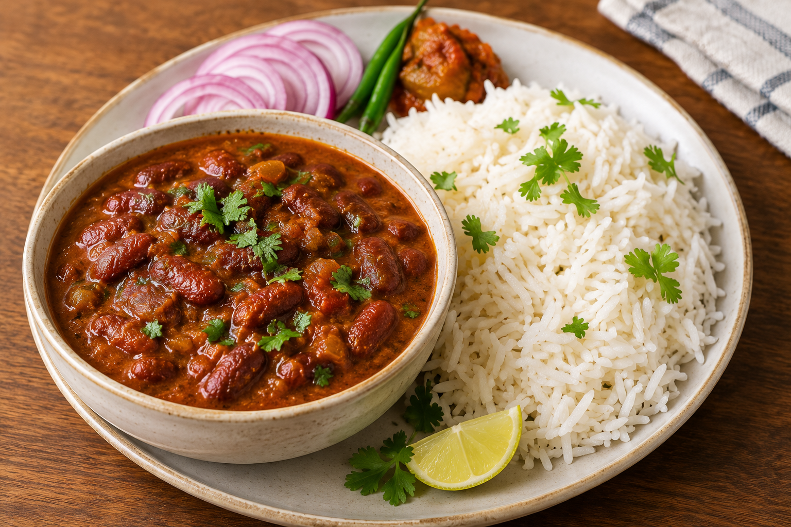

Rajma Chawal Recipe

Back to Home
Ingredients:
- 1 cup rajma (kidney beans)
- 2 medium onions
- 2–3 medium tomatoes
- 1 tbsp ginger-garlic paste
- 1–2 green chillies
- 2 tbsp oil or ghee
- 1 tsp cumin seeds (jeera)
- ½ tsp turmeric powder
- 1 tsp red chilli powder
- 1 tsp coriander powder
- ½ tsp garam masala
- 1 tsp rajma masala (optional)
- Salt to taste
- Fresh coriander leaves
- Water as needed
Steps To Make Delicious Rajma Chawal
- Soak the rajma in water overnight or for at least 8 hours.
-
Drain the soaked rajma and pressure cook it with enough water and a
pinch of salt until soft (about 15–20 minutes).
-
In a pan, heat oil or ghee. Add cumin seeds and let them splutter.
- Add finely chopped onions and sauté until golden brown.
- Add ginger-garlic paste and green chillies. Sauté for a minute.
- Add chopped tomatoes and cook until they turn soft and mushy.
-
Add turmeric powder, red chilli powder, coriander powder, and salt. Mix
well.
-
Add the cooked rajma along with some of its cooking water. Simmer for
10–15 minutes on low heat.
-
Sprinkle garam masala and rajma masala (if using). Mix well and cook for
another 5 minutes.
- Garnish with fresh coriander leaves.
- Serve hot with steamed rice (chawal).